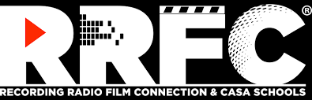

Caleb Jones, Integration Specialist

Resume
Hobbies
Contact
Projects
Summary
I have created and maintained a multitude of Enterprise Automations and
Integrations by use of low-code platforms combined with scripting
languages such as Python. I have experience with REST API, SaaS
administration, and Agile Methodologies.
Skills
API Integrations, Agile, Enterprise Automation, HTML, iPaaS, JSON, Python, REST
API, SQL, Workato, XML
Work History
-
Integration Specialist - West Shore Home

June 2023 to Present
-
Working within a large team focused on providing enterprise level
API solutions to a variety of different processes in order to
streamline workflow and help the company meet its goals.
-
Solely owning the Workato platform to bring uniform practices to
security and the development of automations as well as defining
other impactful SOPs.
-
Providing insight and knowledge of API, automations and
integrations to other team members and leadership to help discover
the most efficient and impactful solutions.
-
In my first year, I improved system performance by 21% making the platform more cost effective for the company.
-
Solutions Specialist - D. Miller & Associates, PLLC

June 2022 to June 2023
-
Worked with a small team assisting in the day to day SaaS
solutions of the law firm including the implementation of a
multi-million dollar mass tort.
-
Maintained and updated multiple CRMs to mitigate issues and
expedite our internal processes.
-
Developed API in Workato to connect our multiple CRMs and other
SaaS softwares to create automations between them and keep
constant communication with vendors
-
Search Consultant - GRN Victoria Crossroads

October 2021 to June 2022
-
Led multiple recruiting projects for high profile clients in hopes
to assist individuals in meeting their career goals.
-
Maintained and updated CAPSx database with information from
recruitment interactions and research done online to make current
and future projects more efficient.
-
Executed advanced search queries within database and internet
browser to locate and select the right individuals for specific
projects.
-
Networked and communicated with professionals in the strictest
level of confidence of personal information as not to jeopardize
their careers.
-
Data Specialist - Marks Balette Young & Moss, PLLC

August 2018 to February 2021
-
Contracted to lead multiple data accumulation projects to gain
marketing leads for the firm until the data team was cut in half
due to lack of business during the pandemic.
-
Organized data in presentable formats via Excel and Google Sheets
for lead analyst to use in visualization for meetings with
investigators and partners.
-
Created proper visualizations of data under direction of
investigators with assistance from lead analyst.
-
Assisted in the creation of proprietary database and ensuing data
formatting needed to move information resulting in increased
workflow from the entire data team.
Education
-
Audio Engineering - Recording, Radio, Film Connection & CASA Schools (RRFC)

August 2020 to February 2021
Trade School/Certification
Certifications
Enterprise Automation - Workato
Automation Pro III - Workato
Automation Pro II - Workato
Automation Pro I - Workato